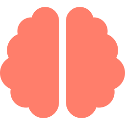
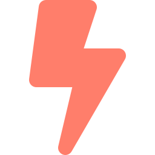
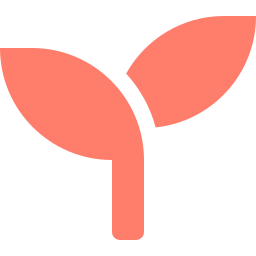

TECH TALK
The AI That Becomes
Part of Your Team
Meet a real, human-like companion that lives inside your computer — remembers you, grows with you, and does your daily work alongside you.
Your staff. Your companion. Your virtual friend.
TABLE OF CONTENTS
What we'll cover today
Two parts — first the big idea, then how it actually works.
01
Part One — Overview
The vision — what TerranSoul is and why it matters.
- The problem we're solving
- The product: a companion on your computer
- What makes it different
- What it does for you
02
Part Two — Technical
Under the hood — how it learns from your documents.
- Read — parse PDFs, Office files & images
- Understand — turn passages into meaning
- Remember — a connected brain of memories
- Recall — find the right answer
THE PROBLEM
We live inside your screens
but your screens don't know us.
Hours every day at the computer, yet the software stays a cold tool. It forgets us the moment we close it, never learns how we work, and leaves a lot of people doing repetitive tasks alone.

It forgets you
Every app starts from zero. No memory, no relationship, no growth.

It doesn't help
You still do the dull, repetitive computer chores by hand.
It's lonely
Screens connect us to everything and leave many of us isolated.
THE PRODUCT
TerranSoul is a companion that lives on your computer.
Not another chatbot in a tab. A presence, with a face and a voice, that you see, talk to, and work beside every day. The more you live together, the more it becomes yours.
"Good morning. Want me to clear your inbox first?"
Call it what you need it to be: a staff, a friend, a companion.
WHAT MAKES IT DIFFERENT
Three things no ordinary app does

Lives & grows with you
Real, lasting memory. It learns your habits, your style, your world — and gets better the longer you're together.
Sees & speaks to you
An embodied avatar with a face and a voice. You don't type at it — you talk with it, like a real companion.
Actually does the work
It runs tasks on your computer — email, files, research, the daily chores — so you don't have to.
Runs on your own machine. Your companion, your memories, your data — private and yours, not sitting on someone else's server.
WHAT IT DOES FOR YOU
A companion that works with you

Companionship for the isolated
An always-present, patient companion for older residents, people living alone, and anyone who finds technology hard.
Levels the playing field
Affordable, private AI help for small businesses, students and families — not just big companies with big budgets.

Works like a teammate
More than an app — a self-employed companion that works alongside you, taking on the daily computer chores so you're free for what matters.

Private by design
It runs on the user's own computer — important for families, elders and anyone wary of sharing their life with the cloud.
02 · PART TWO
Technical — under the hood.
How TerranSoul learns from your documents.
TECH TALK
Teaching an App to Read
How TerranSoul turns documents into knowledge it can recall.
A document-learning pipeline · Vue + Tauri + Rust · on-device first
THE CHALLENGE
A document is not knowledge — yet
When you hand the app a PDF, a scan, or a photo, it sees pixels and characters — not meaning. To actually be useful, it has to do what a person does when they study:
Read it
Even messy scans and photos — in any language.
Understand it
Grasp what each passage actually means.
Connect it
Link new facts to what it already knows.
Recall it
Find the right passage later, by meaning.
The hard part isn't storing text. It's turning text into something the app can recognize again when you ask a question worded completely differently.
This is the "learning from documents" problem.
THE BIG PICTURE
The journey of a document
Every file travels the same four steps — automatically, in the background.
Read
Parse PDFs, Office files & images. Scanned pages go through OCR.
Understand
Split into bite-size passages and capture each one's meaning.
Remember
Store in the brain and auto-link it to related knowledge.
Recall
Answer questions by finding passages by meaning, not keywords.
Slides ahead zoom into the heart of it: the brain.
READ → UNDERSTAND → REMEMBER → RECALL
Reading anything — even a phone photo
Clean digital text is easy. The real world isn't: scanned contracts, screenshots, and photos where the text lives inside an image.
Optical character recognition
An on-device engine looks at the image and reads the letters back out as text.
Multilingual by design
Including Vietnamese — accented characters that trip up most off-the-shelf readers.
Built for speed
Models load once and stay warm — turning a 45-minute job into minutes.
SPOTLIGHT: VIETNAMESE
"Tôi học tiếng Việt"
Those marks above the letters carry meaning. Drop one and the word changes — or the reader crashes.
What we fixed: consistent character handling, a Vietnamese-trained reader, and crash-proof text trimming.
WHAT I LEARNED
Lessons from building the brain
Real data is messy
The hardest bugs came from real input — accented text, phone photos, scans. Design for the edge cases, not the demo.
Never lose a memory
If embedding fails, work is queued and retried — nothing learned is silently dropped.
Warm beats cold
Loading models once and keeping them warm turned 45-minute jobs into minutes.
Meaning + connection wins
Storing meaning and linking related memories is what makes recall feel intelligent.
That's how an app learns from what you give it.
TECH STACK
What it's built with
A modern, on-device stack — fast, private, and self-contained.
On-device first — runs on your machine, private by default; no cloud required.
ARCHITECTURE
How the brain is built
Five layers working together — every one of them on your own machine.
Ingest
Parse PDFs, Office files & images — OCR reads scans and phone photos.
Understand
Split documents into passages and embed each into "meaning space."
The brain
Store as memory linked by a knowledge graph — extends · supports · refines · contradicts.
Retrieve
Hybrid recall: search by meaning + keywords + walk the links, then merge & rank.
Companion
The avatar you see and talk to — a Vue + Tauri desktop app.
On-device first — every layer runs locally; your documents never leave your computer.
BY THE NUMBERS